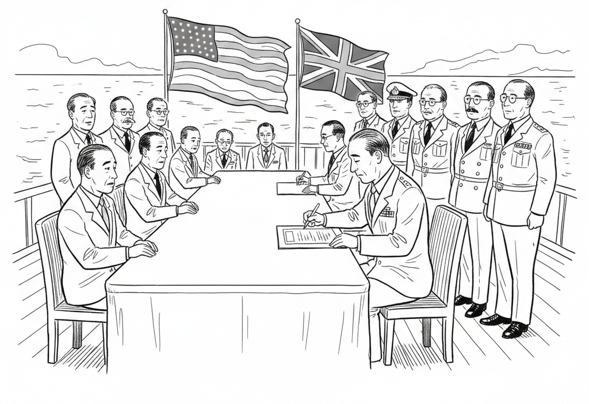

第二次世界大戰爆發
第二次世界大戰（簡稱「二戰」）的時間範圍為西元1939年9月1日至西元1945年9月2日。
主要時間點：
- 西元1939年9月1日：德國入侵波蘭，戰爭爆發。
- 西元1939年9月3日：英國和法國對德國宣戰。
- 西元1941年6月22日：德國入侵蘇聯。
- 西元1941年12月7日：日本發動「珍珠港事變」，引發太平洋戰爭，美國隨後參戰。
- 西元1944年6月6日：盟軍發動「諾曼第登陸」，在歐洲西線開闢第二戰場。
- 西元1945年5月8日：德國無條件投降，歐洲戰爭結束（「歐洲勝利日」）。
- 西元1945年8月6日與8月9日：美國分別在日本廣島與長崎投下原子彈。
- 西元1945年8月15日：日本宣布無條件投降（「日本投降日」）。
- 西元1945年9月2日：日本正式簽署投降書，二戰全面結束。

二戰是人類歷史上規模最大、傷亡最慘重的戰爭，橫跨歐洲、亞洲、非洲及太平洋等多個戰場，深刻影響了全球的地緣政治格局和社會發展。
二戰爆發的主要原因：
- 凡爾賽條約的影響：第一次世界大戰後，戰勝國對德國施加了嚴苛的條件，包括巨額賠款、失去領土和限制軍隊。這些措施讓德國經濟陷入困境，人民感到憤怒和不滿。希特勒利用這種情緒，承諾恢復德國的榮耀和強大，最終帶領德國走上侵略的道路。
- 經濟大蕭條：一戰後的全球經濟大蕭條對世界各國經濟造成巨大衝擊，許多人失業和生活困難。在這種情況下，德國和日本等國的領導人宣稱，只有通過對外擴張和戰爭才能解決國內的經濟問題，從而贏得民眾支持並推動侵略政策。
- 國際聯盟的無效：一戰後成立的國際聯盟為維護世界和平，但它缺乏實際的軍事力量和強有力的領導。當日本侵略中國或德國吞併奧地利時，國際聯盟未能有效阻止和制裁這些侵略行為，這使得侵略者變得更加膽大，最終引發了第二次世界大戰。
😁😂😃🌏🌑🌓🌔🌕👦👧👨👩👪👫🌴🌵🌷🌹🐔🐗🐍🐑🐤🐷🍇🍈🍉🍌🍍🍎🍔🍕🍖🍗🍙🍚🍜🍛📅📆📞📪📠🚀🚄🚅🚌🚑🚒🚓🚕🚗🚚🚢🚤🚥🚧🔶🔷🔺🔻🔴💙💚💛💜
區塊01
區塊02